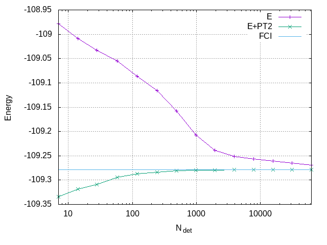
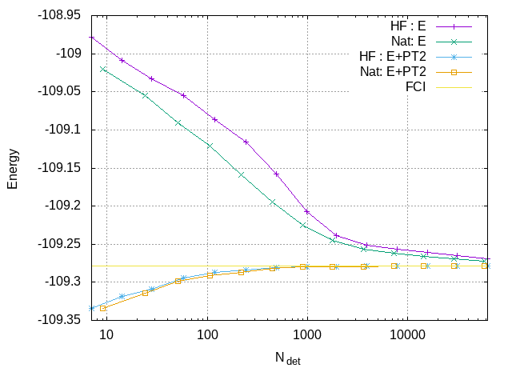

Frozen-Core FCI Calculations using CIPSI
HOME
Table of Contents
In this part of the tutorial, you will learn how to perform frozen-core Full Configuration Interaction (FCI) calculations using the Configuration Interaction using a Perturbative Selection made Iteratively (CIPSI) algorithm in Quantum Package (QP) for the ground state of molecules. We will use the nitrogen molecule near the equilibrium bond length, with the cc-pVDZ basis set.
1 Preparing the EZFIO
First, let's create a z-matrix file n2.zmt for dinitrogen, at a distance
of 2.118 atomic units:
n n 1 r r 2.118
Next, create an EZFIO database containing the geometry and the basis
set parameters for the cc-pVDZ basis set. Specify that atomic units
are used with the --au flag:
qp create_ezfio --au -b cc-pvdz n2.zmt
This will create a directory named n2.ezfio in the current
working directory, and it will be selected as the currently used EZFIO
directory in the current shell.
To perform a frozen-core FCI calculation using CIPSI, we first need to run a Hartree-Fock calculation:
qp run scf | tee n2.scf.out
The expected HF energy is -108.949378 atomic units.
Then, freeze the core orbitals:
qp set_frozen_core
2 Running a first frozen-Core CIPSI Calculation
To perform the frozen-core FCI calculation using the CIPSI algorithm
in QP for dinitrogen, we will use the qp run fci command. Note that
the fci program is used to perform CIPSI calculations in the full
configuration interaction (FCI) space defined by the set of active
orbitals. Since we have already defined all the valence MOs as
Active and the two core MOs as Core using the qp set_frozen_core
command, we can now set the maximum number of determinants to 50 000
using the qp set command.
qp set determinants n_det_max 50000
Next, we can run the frozen-core CIPSI calculation using the qp run
fci command:
qp run fci | tee n2.fci1.out
When running the qp run fci command, the CIPSI calculation is
executed, and it stops when the number of determinants is larger
than the number set with qp set determinants n_det_max. The output is
displayed in the terminal, but we can save it to a file using the
tee command. In this case, the standard output will be saved to the
file n2.fci1.out.
2.1 Variational energy and PT2 contribution
The output of the CIPSI calculation gives information about the convergence of the wavefunction, the energy, and the correlation energy of the system.
The output displays results at different numbers of determinants
(N_det) in the wavefunction (1, 9, 24, 50, …). For each
N_det, the output shows the energy (E), the PT2 and rPT2
corrections, and the total energy with these corrections (E+PT2 and
E+rPT2). The PT2 and rPT2 corrections represent the second-order
perturbation theory corrections and renormalized PT2 corrections,
respectively.
Summary at N_det = 62591
-----------------------------------
# ============ =============================
State 1
# ============ =============================
# E -109.26865151
# PT2 -0.00956176 0.00001384
# rPT2 -0.00954717 0.00001382
#
# E+PT2 -109.27821327 0.00001384
# E+rPT2 -109.27819868 0.00001382
# ============ =============================
A statistical error bar is provided as the PT2 contribution is computed using a stochastic algorithm.
To create a plot showing the convergence of the energy as a function of the size of the wavefunction, first extract the relevant data from the output file:
qp_extract_cipsi_data.py n2.fci1.out > data
and then give the following commands to Gnuplot
set grid
set xlabel "N_{det}"
set ylabel "Energy"
set log x
plot "data" using 1:2 with linespoints title "E", \
"data" using 1:($2+$3) with linespoints title "E+PT2", \
-109.278339 title "FCI"

The plot indicates that the variational energy converges to the FCI limit. The PT2-corrected energy is a better estimate of the FCI energy, but it may overestimate its magnitude.
2.2 Extrapolated FCI energy
To plot the variational energy as a function of the renormalized PT2 correction, use the following Gnuplot commands:
set grid
set xlabel "E_{PT2}"
set ylabel "Energy"
unset log x
set xrange [:0.]
plot "data" using 5:2 with linespoints title "", \
-109.278339 title "FCI"
The FCI energy can be estimated by making a linear fit using all the
calculations with different N_det:
\[ E_{\text{CIPSI}} (\text{rPT2}) = E + \alpha\, \text{rPT2} \]
Fitting the curve with Gnuplot over the last few points (for \(|\text{rPT2}| \le -0.05\)), one obtains an FCI estimate of -109.2779 au.
E_var(E_PT2) = a*E_PT2 + E_FCI fit [-0.05:0.] E_var(x) "data" using 5:2 via a, E_FCI replot E_var(x) title "Fit" print E_FCI

The following section of the output shows the extrapolated FCI energy for the ground state, with energies provided for various rPT2 values.
Extrapolated energies
------------------------
State 1
=========== ===================
minimum PT2 Extrapolated energy
=========== ===================
-0.0131 -109.27814635
-0.0171 -109.27815768
-0.0215 -109.27811640
-0.0277 -109.27797856
-0.0399 -109.27792963
-0.0709 -109.27823032
-0.1185 -109.27863003
=========== ===================
The extrapolated energies in the table are obtained using different numbers of points in the fit. The first column displays the value of the PT2 of the first point used in the extrapolation. By providing extrapolated values with multiple points, the user can determine the stability of the extrapolation. In this case, we can confidently state that the extrapolated FCI value is close to -109.2781(2).
3 Saving Natural Orbitals
We can improve the convergence of CIPSI by using natural orbitals. To do this, we first need to save the natural orbitals into the EZFIO database:
qp run save_natorb
4 Running a second frozen-Core CIPSI Calculation
We can run the frozen-core CIPSI calculation again, but this time using the natural orbitals:
qp run fci | tee n2.fci2.out
4.1 Variational energy and PT2 contribution
To create the plot showing the convergence of the energy as a function of the size of the wave function, extract the data from the output file:
qp_extract_cipsi_data.py n2.fci2.out > data2
and then give the following commands to Gnuplot
set grid
set xlabel "N_{det}"
set ylabel "Energy"
set log x
plot "data" using 1:2 with linespoints title "HF : E", \
"data2" using 1:2 with linespoints title "Nat: E", \
"data" using 1:($2+$3) with linespoints title "HF : E+PT2", \
"data2" using 1:($2+$3) with linespoints title "Nat: E+PT2", \
-109.278339 title "FCI"

The plot indicates that the variational energy converges more quickly with natural orbitals compared to Hartree-Fock orbitals.
4.2 Extrapolated FCI energy
One can also compare the plots of the variational energy as a function of the renormalized PT2 correction:
set grid
set xlabel "E_{PT2}"
set ylabel "Energy"
unset log x
set xrange [:0.]
plot "data" using 5:2 with linespoints title "HF", \
"data2" using 5:2 with linespoints title "Nat", \
-109.278339 title "FCI"
Fitting the curve with Gnuplot over the last few points (for \(|E_{\text{PT2}}| \le -0.05\)), one obtains a FCI estimate of -109.27813 au.
E_var(E_PT2) = a*E_PT2 + E_FCI fit [-0.05:0.] E_var(x) "data2" using 5:2 via a, E_FCI replot E_var(x) title "Fit" print E_FCI
Extrapolated energies
------------------------
State 1
=========== ===================
minimum PT2 Extrapolated energy
=========== ===================
-0.0091 -109.27826959
-0.0128 -109.27816856
-0.0170 -109.27810039
-0.0232 -109.27803095
-0.0341 -109.27812522
-0.0538 -109.27847647
-0.0857 -109.27849504
=========== ===================
The extrapolated energies are more accurate with natural orbitals since the PT2 corrections are smaller: the last point is closer to the origin. From the data of the table, one can estimate the FCI energy as -109.2782(2), in agreement with the exact value of -109.278339.